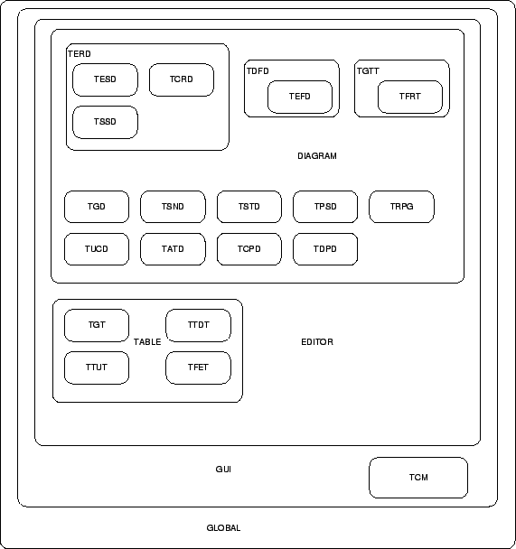
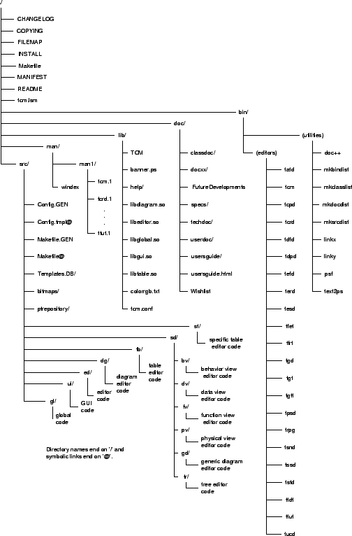

Next: 4. TCM User Interface
Up: Toolkit for Conceptual Modeling
Previous: 2. System Architecture
Subsections
3. Source Code Organization
Figure 3.1:
Logical source code organization.
|
 |
In this chapter we explain how the source code of TCM
is organized. TCM basically consists of about two dozen graphical editors
and a startup program. The source code can be found in the directory
$TCM_HOME/src. The TCM source
code is physically split over several subdirectories. The sources can
be compiled into a number of object libraries
and executables. The source code is split in order to factor out commonalities
between the programs. See figure 3.1 for a
Venn-diagram like overview of the commonalities of the source code.
The entire TCM source is called Global, the sources of the
programs that have an X/Motif GUI, are called GUI. The sources
that are used in all editors, are called Editor. The sources that
are used in all diagram editors, are called Diagram.
The sources that are used in all table editors are called Table.
The sources that are used in the editor TERD are called TERD etc.
For instance, the editor TSSD uses the sources of the TSSD area, the TERD
area, Diagram, Editor and Global, but it does not use Table or TCRD.
See figure 3.2 for an overview of
the current TCM development directory structure.
The sources are physically split over several
subdirectories of the src directory. This is done according to the
following criteria:
- All code that is global and that is not part of the other areas is
collected in the directory src/gl.
This code is compiled into a library called libglobal. This includes
common classes for lists,
strings,
Unix utilities
etc. that can be
used in any program, not necessarily a TCM tool.
- All code that comprises the graphical user interface but which is not
specific for any TCM program is collected in the directory
src/ui.
This code is compiled into a library called libgui. This includes a
generic application framework for Motif based C++ programs, classes for
drawing lines and other shapes under X, classes for building all kinds of
pop-up dialog windows, classes for making various pop-up and pull-down
menus etc.
- All code that lies in the editor area (and in the TCM area) but not
in one of the subareas, is collected in the directory src/ed. This code
is compiled into a library called libeditor and in the executable tcm,
the startup program. The libeditor library includes things that are applicable to
all TCM editors such as saving and loading documents (the generic part of it),
printing documents, the on-line help and it contains a number of abstract classes
like Document,
Viewer
and
Command
on which specific editor
classes are based.
- All code that lies in the diagram area and that is not part of one
of the diagram subareas, is collected in directory src/dg. This code is compiled into a library called libdiagram. This
includes classes for (abstract)
graphs
(and classes for
nodes
and
edges), classes for
graphical shapes
(boxes,
lines,
ellipses) and
classes for most diagram edit commands (CreateNodeCmd,
CreateEdgeCmd,
DeleteShapesCmd,...).
This library is used by every specific diagram editor.
- All code that lies in the table area is collected in directory
src/tb. This code is compiled into
a library called libtable. This includes classes for (abstract)
tables
having rows
and
columns
of
cells
and it includes all the
table edit commands. This library is used by each table editor.
- All code that is specific one or more (but not all) of the diagram editors, is
collected in the directory src/sd
(specific
diagram). Each specific diagram editor can be compiled into a distinct executable
(at least in principle, it is also possible to compile more editors into one
executable). As you can see in the picture, the code of some editors
includes the code of others (e.g. TSSD code includes TERD specific code).
The specific diagram editor code consists of C++ classes derived from
(possibly abstract) classes in libdiagram or from other specific diagram editor
classes. These classes are (indirectly) derived of the libdiagram classes
Graph,
DiagramWindow,
DiagramChecks,
DiagramViewer,
Diagram,
Shape,
ShapeView,
Node
and
Edge. The tool specific constraints are
all implemented in the classes derived from Graph, DiagramChecks, Node
and Edge. Because the
specific diagram editor code is so diverse it is subdivided further into
separate subdirectories:
- src/sd/bv
is for the behavior view editors (TSTD, TATD, TRPG, TPSD),
- src/sd/dv
is for the data view editors (TERD, TESD, TSSD, TCRD, TUCD),
- src/sd/fv
is for the function view editors (TDFD, TEFD, TSND),
- src/sd/pv
is for the physical view editors (TCPD, TDPD),
- src/sd/gd
is for TGD and
- src/sd/tr
is for the tree editors (TGTT, TFRT).
The TGD sources form the most simple diagram editor and it can be used
as a basis for developing your own diagram editors. Specific editors that
reside in the same directory can share one or more classes (for instance,
the class BinaryRelationship
is used both by TSSD and TUCD), or, one editor shares/extends all classes of
another editor (for instance, the classes of TFRT are all specializations of
the classes of TGTT).
- All code that is specific for the different table editors, is collected
in the directory src/st. The amount of
specific table code is rather
small. The specific code consists entirely of specializations of
the following classes in libtable:
TableWindow,
TableViewer
and
Table.
Also, most of the tool specific constraints are implemented in these
specializations of class Table.
In principle each C++ class is declared in a distinct header file
and has a distinct source file for the implementation. The files
names are equal to the class name except that file names are in
lower case letters by convention. Header files have suffix '.h' and
source file have suffix '.c'. The reason that C++ source files have
suffix '.c', which is originally used only for C programs, is that
some C++ compilers require a suffix '.C', and some require '.cc' or
'.cpp'. There is no C++ file name suffix that is accepted
by all compilers that we have used except the '.c' suffix.
Figure 3.2:
TCM directory tree.
|
 |
3.2 Individual files and directories
In the previous section we described the contents of the
src
subdirectory.
Here we will describe the individual files and directories that are included in
the source code distributions of TCM. The TCM distribution top-level directory
contains the following files:
- CHANGELOG, which contains
the differences between the consecutive TCM versions.
- COPYING, which is the GNU public license.
- FILEMAP, which lists and describes
the files and directories in the TCM executable distributions.
- INSTALL, which tells how to install
the binary and source code distributions.
- MANIFEST, which lists all files
and directories in the TCM distribution.
- Makefile, which is the top-level
Makefile. Most sub(sub)directories contain a Makefile too. See
chapter 7 for what to do with these Makefiles.
- README, which is the README file
about the TCM project, the software, manuals, distributions etc.
- tcm.lsm
is a file that describes
TCM in the format that is required by the Linux software map. TCM is registered in
the LSM (http://www.execpc.com/lsm/).
- tcm-dynmotif-2.0.spec. RPM spec file for building
a TCM RPM distribution that links dynamically with the Motif/LessTif library.
You can use (a modified copy of) this spec-file to build your own TCM
RPMs. See http://www.rpg.org
for
more information about RPMs.
- tcm-statmotif-2.0.spec. RPM spec file for building
a TCM RPM distribution that is statically linked with a Motif library.
The top-level directory contains the following directories:
- bin/. Here the TCM editors and other
binaries are put after compilation. Also this directory contains a number of
utility programs:
- bin/mkbindist. This is a
shell script that makes a tar.gz file of a binary distribution of the compiled
source code. The script needs two arguments
for the version number and the platform, e.g. mkbindist 2.0 solaris.sparc.
This will create the file tcm-2.0.bin.solaris.sparc.tar.gz in $TCM_HOME.
The files that will be included are listed in the code of the script itself.
- bin/mksrcdist. This is a
shell script that makes a tar.gz file of the source code. It needs one argument
for the version number, e.g. mksrcdist 2.0.
This will create the file tcm-2.0.src.tar.gz in $TCM_HOME.
The files that will be included are listed in the code of the script itself.
- bin/mkclasslist. This is a
shell script that writes the names of all header files of the source code to
standard output in alphabetical order.
- bin/psf. This is a Perl script
that is used to filter PostScript output (see man psf).
- doc/. Here all technical and user
documentation can be found. The documentation is in HTML-format and possibly in PostScript
and/or PDF format. The file doc/index.html
links to all the different HTML documents. The documentation includes:
- User's guide.
In usersguide/index.html
you can
find an HTML version. A PostScript version can be found in
usersguide-2.0.ps.gz
(large PostScript files in TCM are always gzipped to save disk space).
Optionally a PDF copy is put in
doc/usersguide-2.0.pdf
- Developer's guide, which is the document that you are reading now.
In
developersguide/index.html
you can find
an HTML version. A gzipped PostScript version can be found in
developersguide-2.0.ps.gz. Optionally a PDF copy is found in
developersguide-2.0.pdf
- Source code documentation. For each C++ class an HTML page is generated
by the program DOC++ (see chapter 5). The HTML index is in
sourcecode/index.html. Also a
PostScript document with all the source code documentation can be found in
sourcecode-2.0.ps.gz
- Specifications. The directory specifications
contains a number of specifications (made with TCM) of some
individual editors.
- Wish lists. The directory wishlist
contains:
- Document sources. In the directory docsrc
you can find the LATEX, EPS and TCM files that comprise the sources of the documentation.
These files are not included in the source code distribution itself. The sources can be
downloaded separately from our FTP-site, from a file
tcm-2.0.docsrc.tar.gz
The sources contain a number of Makefiles to generate a number of documents automatically.
The program DOC++ is used to generate HTML and LATEX from the C++ source code,
LATEX2HTML is used to generate the HTML versions of the user's and developer's guide.
We have included the sources of DOC++, so that it will be compiled and installed before
you build the documentation. LATEX2HTML can be downloaded from
ftp.tex.ac.uk/tex-archive/support/latex2html
LATEX2HTML is written in Perl and you have to configure it yourself
before you can use it on your system. This is all explained in the README
file of LATEX2HTML.
- lib/. Here the object libraries
(libglobal, libgui, libeditor, libdiagram and libtable) are stored after compilation.
Furthermore this directory contains:
- lib/TCM
is the X Resources file.
This file is not directly used by TCM (the default X resources of TCM are included
in the source code), but it serves as a basis of your own modifications.
You can load X resources with the xrdb command or by including them in some
X-startup file like $HOME/.Xdefaults.
- lib/banner.ps
is a PostScript
banner page. Normally this page is not printed but when you wish to print this
banner page in front of your TCM documents, you can indicate this via the Printer
Options sub-menu of in your editor or you can make this option the default by updating the
tcm.conf
file.
- lib/colorrgb.txt
is an ASCII
file that maps TCM color names to red-green-blue (rgb) values.
- lib/help/
is a directory with the
on-line help text files. The help files are all in ASCII format. These help texts are
shown by the commands of the help-menu in the editors.
- lib/tcm.conf
is the TCM configuration
file that is read upon start-up. It contains also some platform specific configuration
options, like the name of the printer and the command to print or preview files.
This file is intended to be human-readable and self-documenting. In stead of
editing this file (which will affect all users of this TCM installation), you
can also decide to override one or more options in a personal configuration file
$HOME/.tcmrc. .tcmrc has the same syntax as
tcm.conf. Note that some system specific configuration options such as the command
to print or preview a document is commented out in
tcm.conf. That is because TCM
itself tries to determine these commands. Only if TCM can't find these commands
or it chooses the wrong ones, you should set these as options explicitly by
modifying tcm.conf.
- man/
contains Unix man pages for TCM.
- man/man1/
contains short manual pages
in nroff-format for each of the editors.
- man/windex
contains a simple index
file that is used by whatis and man -k.
Depending on the operating system and the way
TCM is compiled, object libraries are either shared object libraries,
ending on .so or object archive libraries ending on .a.
In the first case, the object code in the library is kept separated from
the tool executables (they are dynamically linked), which makes
executables smaller and run faster. For the Sun CC compiler (the default
Solaris compiler) shared object libraries are made by default. For the
other compilers such as gcc archive libraries are made by default.
The contents of archive libraries are physically made part of the tool
executables (they are statically linked); the libraries could be removed
when compilation is completed.
Executables using object archive libraries tend to be much larger than
with shared object libraries. Because of that, distributions that have
to use archive libraries are in general compiled into only a few different
executables, e.g. one for the tcm startup tool, one for all the diagram
editors and one for all the table editors. The individual editors are then
symbolic links to the collective diagram or table editor. The collective
editor will see in its argv[0] argument which of the tools has to be
launched.
Next: 4. TCM User Interface
Up: Toolkit for Conceptual Modeling
Previous: 2. System Architecture
Henk van de Zandschulp
2003-01-07